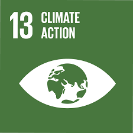
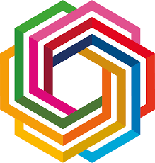

Erika Buckley, Thalia Champ, Darcy Luke, Keira Manglani, Aoife Richards, Tanisha Sharma, Nehir Yurtsever
Refresh to see carbon saved!
| Team | Points |
|---|---|
| Laf | 200 |
| Birks | 100 |
| Laf | 200 |
| Birks | 100 |

By taking part, you’re helping the University make a real difference and a positive change in working towards the UN’s 17 Sustainable Development Goals (SDGs).

The University of Exeter is part of the top 2 percent of institutions worldwide in the Times Higher Education Impact Rankings. We owe it not only to ourselves but also future generations to make conscious decisions about our impact on the Earth, because there is no planet B.
You will also have the opportunity to compete against other cohorts, encouraging collaboration and reinforcing community. Every little action adds up and makes a meaningful contribution.
Even if it’s a small thing each day, you have made a conscious decision about your carbon impact. Logging important actions also makes it easier for the University to report progress.